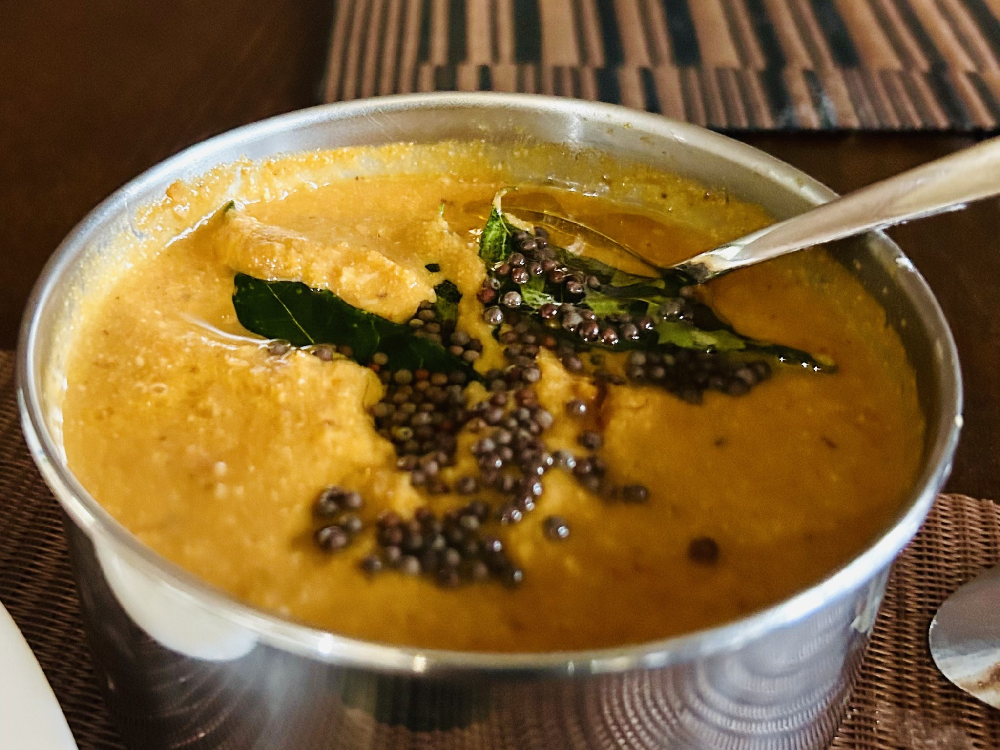

Condiment
Indian Tomato–Chilli Chutney
A punchy tomato chutney built from dried chillies, coconut, tamarind and cashews, mellowed with plenty of garlic and finished with mustard-seed tempering.

Ingredients
- 5 dried chillies
- 1 tbsp dried coconut
- 1 tsp tamarind pulp
- 4–5 cashews
- 2 tsp urad dal
- 2–3 tbsp water, for soaking, plus a little more as needed
- 10 garlic cloves, or 5–6 large cloves
- 1/2 tsp salt
- 1 large tomato, cubed
- A little sugar, if needed
Tempering
- 1 tsp oil
- 3 curry leaves
- 1/2 tsp mustard seeds
Method
- Soak the dried chillies, coconut, tamarind and cashews in 2–3 tablespoons water for 20–30 minutes.
- Toast the urad dal gently in a dry pan until pale golden and nutty.
- Transfer the soaked mixture to the pan with the toasted urad dal, garlic and salt. Add a small splash of water and braise gently until the garlic and urad dal are fully tender.
- Add the tomato and cook until softened, then blend to a smooth, cohesive paste. Add a little sugar only if needed, and only enough water to reach the desired consistency.
- Heat the oil separately with the curry leaves and mustard seeds, then pour the tempering over the chutney.
Notes
This one is deliberately spicy. Cashews and coconut give enough body to carry the chilli, while tamarind keeps the finish sharp. The small amount of toasted urad dal is cooked until tender and blended into the chutney: it adds a subtle nutty depth and helps the paste hold together without making it heavy or pasty.